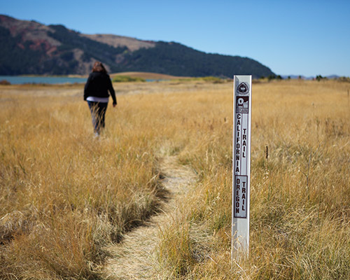

Take a Hike
By James Bean
The weather in town is starting to heat up a little. It might still be too cold for you to ventrue outdoors, but it's never to soon to start planning to. Soda Springs was a landmark for the early travelers along the Oregon Trail, and luckily for you, you can still walk the very trail that they took.
I took it upon myself to go and enjoy the beauty of the outdoors while hiking the Oregon Trail. I started out mid-day, since it is still rather cold. I was bundled up, and the sun was high in the sky. There was still some snow patches that were hiding from the sun in the shade of trees, but for the most part the snow had melted into the golden grass around me.
I hiked for about 2 hours, walking slowly and taking in the beautiful views. I only saw two other people while I was out, another hiker and a runner. It was incredibly peaceful. If you can brave the cold now, I highly suggest getting out and hiking before it gets much busier.
The weather in town is starting to heat up a little. It might still be too cold for you to ventrue outdoors, but it's never to soon to start planning to. Soda Springs was a landmark for the early travelers along the Oregon Trail, and luckily for you, you can still walk the very trail that they took. I took it upon myself to go and enjoy the beauty of the outdoors while hiking the Oregon Trail. I started out mid-day, since it is still rather cold...
continue to full article